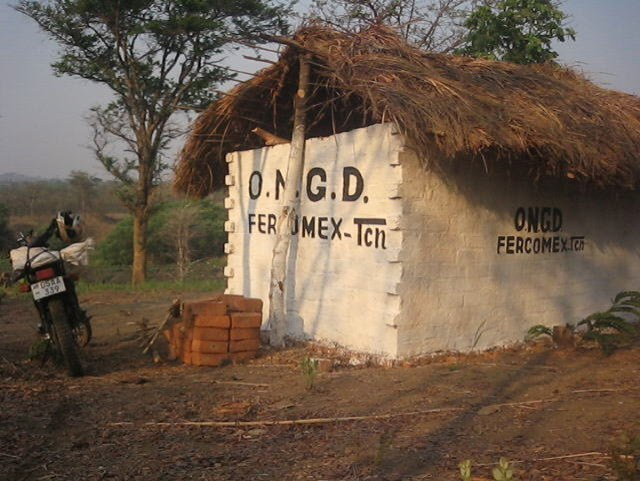
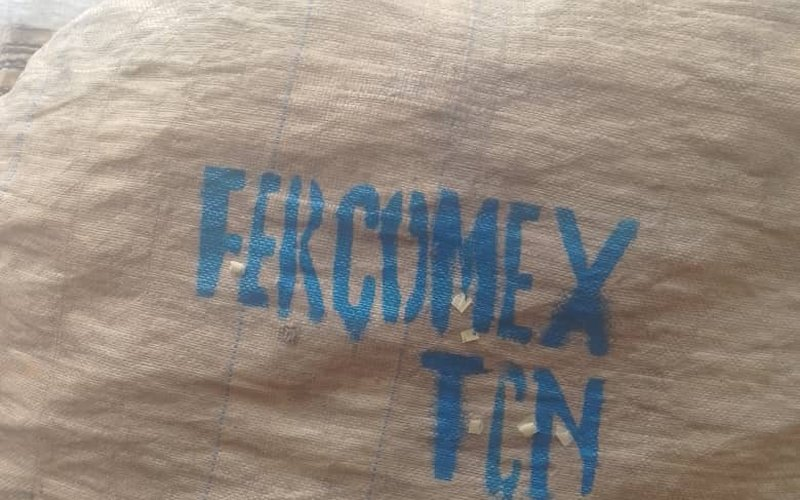

Agriculture durable
Formation des petits producteurs, accompagnement technique et amélioration durable de la sécurité alimentaire.
En savoir plusFRNotre Terre — Notre Prospérité
ENOur Land — Our Prosperity
SWUdongo Wetu — Ufanisi Wetu
Agriculture communautaire et développement durable en République démocratique du Congo depuis 1997.
FERCOMEX-TCN (Ferme Communautaire et Expérimentale – La Terre de Chez-Nous) est une organisation non gouvernementale congolaise créée en 1997. Fondée comme une ferme expérimentale au service des petits producteurs, elle est devenue un acteur du développement local qui renforce les capacités des communautés rurales, améliore la sécurité alimentaire et encourage des pratiques agricoles durables.
Aujourd’hui, nous œuvrons aussi pour la résilience climatique, la gestion durable des déchets et des solutions écologiques au service d’un développement inclusif, en participant à des initiatives internationales pour la justice environnementale.
Notre histoire et notre mission
Depuis 1997, FERCOMEX-TCN accompagne les communautés du Haut-Katanga : près de trente ans de présence continue sur le terrain, quatre domaines d'action et une ferme communautaire à Kaisala, au service des petits producteurs.
Quatre grands axes guident nos interventions auprès des communautés, en cohérence avec les Objectifs de Développement Durable.
Formation des petits producteurs, accompagnement technique et amélioration durable de la sécurité alimentaire.
En savoir plus
Adaptation aux changements climatiques grâce à des solutions fondées sur la nature et des pratiques locales.
En savoir plus
Reboisement, gestion durable des déchets, économie circulaire et conservation des écosystèmes.
En savoir plus
Autonomisation économique par l'entrepreneuriat vert et les activités génératrices de revenus.
En savoir plus« Bâtir des communautés résilientes, autonomes et prospères, capables de gérer durablement leurs ressources naturelles. »Faire un don
Suivez nos projets, formations et campagnes de sensibilisation.

FERCOMEX-TCN engage la ville de Lubumbashi dans la collecte des bouteilles de plastique, une action concrète d'économie circulaire qui prolonge nos engagements au sein des réseaux GWCN et GAIA.
L'achèvement de la grange marque une étape majeure du projet d'élevage porcin lancé avec le Rotary local : les animaux rejoignent des installations adaptées et durables.
Maïs, vétiver, hibiscus, soja, carottes et oignons : les terres acquises en 2011 entrent en production, au bénéfice direct de la sécurité alimentaire des communautés.
Notre action locale s'inscrit dans des mouvements internationaux pour la justice environnementale.
Institutions et organisations qui soutiennent nos actions au Congo et au Canada.